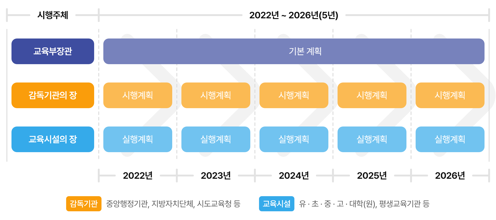
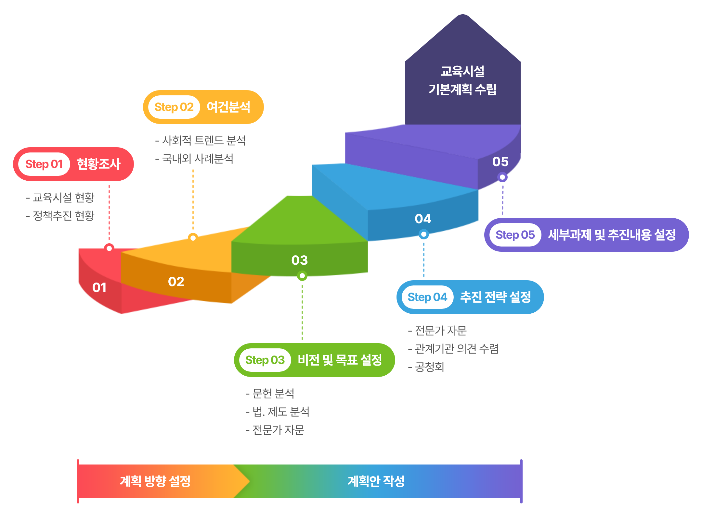
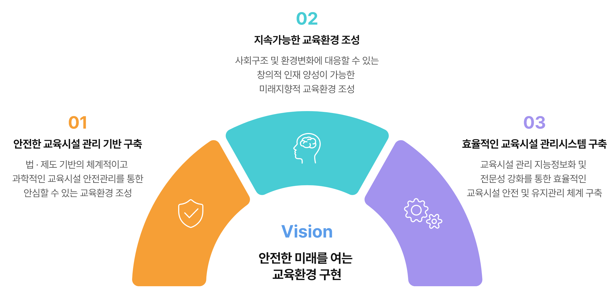
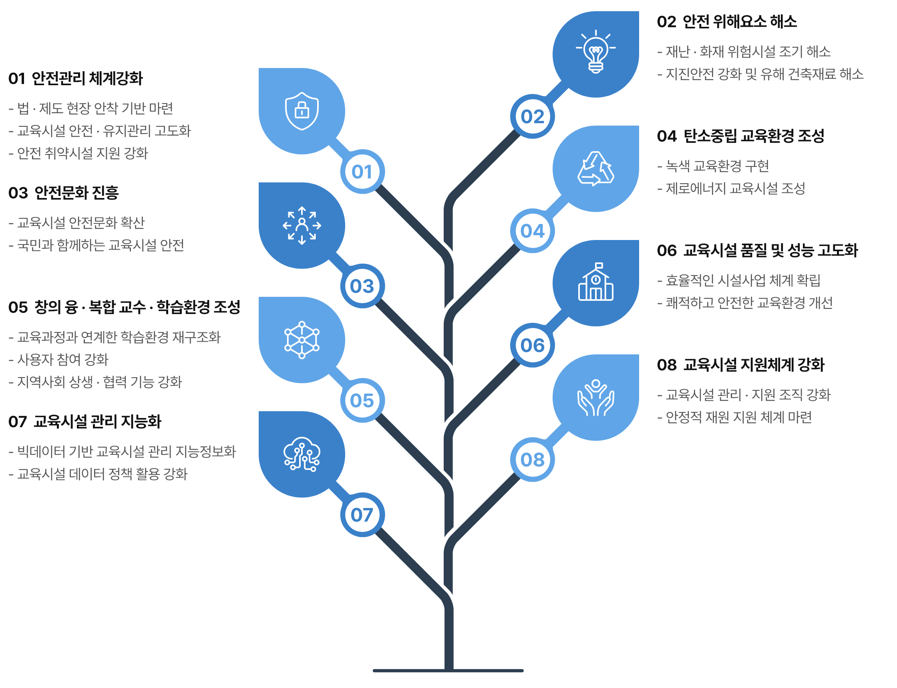
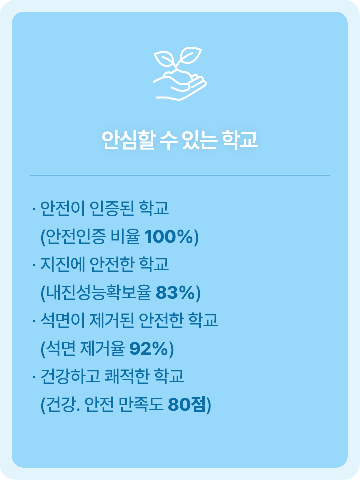
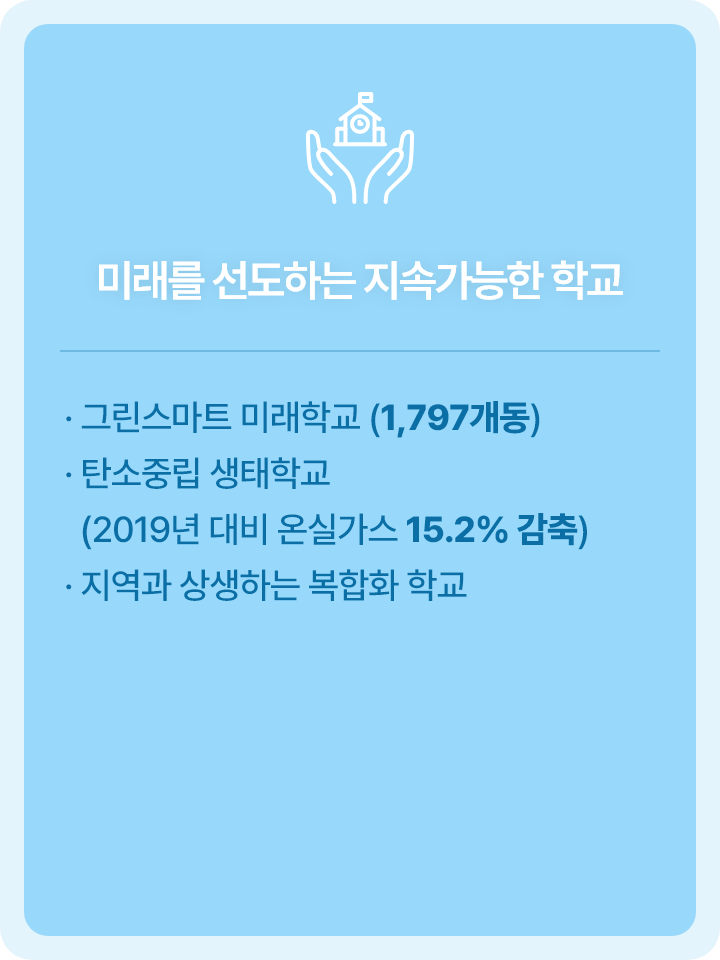
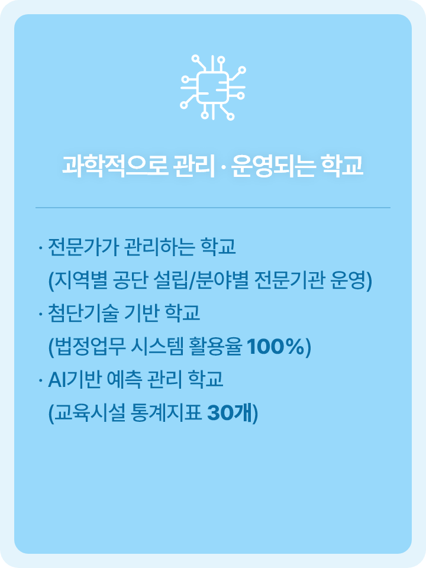

교육시설 기본계획
교육부장관은 국가 차원의 교육시설 종합관리 및 지원체계 구축을 위한 기본계획을 5년마다 수립 · 시행해야 합니다.
기본계획은 교육시설 정책 목표·추진방향을 정하는 5년 단위의 중장기 계획으로, 향후 5년간 교육시설에 관한 정책시행의 토대가 되는 최상위 계획입니다.
기본계획을 바탕으로 감독기관의 장은 매년 시행계획을 수립하고, 이에 따라 교육시설의 장은 매년 실행계획을 수립합니다.
교육시설 기본 계획안

시행주체 : 교육부장관 / 2022년 ~ 2026년(5년) : 기본계획
시행주체 : 감독기관의 장 / 2022년 ~ 2026년(5년) : 시행계획
시행주체 : 교육시설의 장 / 2022년 ~ 2026년(5년) : 실행계획
감독기관 : 중앙행정기관, 지방자치단체, 시도교육청 등
교육시설 : 유·초·중·고·대학(원), 평생교육기관 등
교육부 ‘교육시설 기본계획’ 바로가기
교육시설 기본계획 수립 절차

- 계획방향 설정
- Step 01 현황조사 : 교육시설 현황, 정책추진 현황
- Step 02 여건분석 : 사회적 트렌드 분석, 국내외 사례분석
-
- 계획안 작성
- Step 03 비전 및 목표설정 : 문헌 분석, 법.제도 분석, 전문가 자문
- Step 04 추진 전략 설정 : 전문가 자문, 관계기관 의견 수렴, 공청회
- Step 05 세부과제 및 추진내용 설정
교육시설 안전점검 계획 관련 법령
「교육시설 등의 안전 및 유지관리 등에 관한 법률」 제2조 정의 제1호
제2조(정의) 이 법에서 사용하는 용어의 뜻은 다음과 같다. <개정 2021. 12. 28.>
-
1. “교육시설”이란 다음 각 목의 어느 하나에 해당하는 학교 등의 시설 및 설비를 말한다.
- 가. 「유아교육법」 제2조제2호에 따른 유치원
- 나. 「초ㆍ중등교육법」 제2조에 따른 학교
- 다. 「고등교육법」 제2조에 따른 학교
- 라. 「평생교육법」 제31조제2항 및 제4항에 따른 학력ㆍ학위가 인정되는 평생교육시설
- 마. 다른 법률에 따라 설치된 각급 학교(국방ㆍ치안 등의 사유로 정보공시가 어렵다고 대통령령으로 정하는 학교는 제외한다)
- 바. 그 밖에 대통령령으로 정하는 교육관련 시설
「교육시설 등의 안전 및 유지관리 등에 관한 법률」 제5조 교육시설기본계획의 수립 등
① 교육부장관은 교육시설의 종합적인 관리ㆍ지원체계를 구축하기 위한 교육시설기본계획(이하 “기본계획”이라 한다)을 제7조에 따른 교육시설정책위원회의 심의를 거쳐 5년마다 수립ㆍ시행하고, 이를 공표하여야 한다. 기본계획을 변경하는 경우에도 또한 같다.
② 기본계획에는 다음 각 호의 사항이 포함되어야 한다. <개정 2021. 12. 28.>
- 1. 중장기 교육시설 관리계획 및 정책 방향에 관한 사항
- 2. 교육시설에 대한 조사, 연구ㆍ개발 계획에 관한 사항
- 3. 교육시설 관리 및 지원체계 구축에 관한 사항
- 4. 교육시설 자산관리 방안에 관한 사항
- 5. 교육시설의 안전성 또는 관리 상태에 대한 평가ㆍ점검에 관한 사항
- 6. 교육시설 재난ㆍ재해와 안전사고 예방 및 피해복구 등 안전한 관리를 위한 개선계획에 관한 사항
- 7. 교육시설 안전 및 유지관리를 위하여 필요한 재원확보와 조달방안에 관한 사항
- 8. 교육시설 종합정보망의 구축ㆍ운영 활성화 방안에 관한 사항
- 9. 교육시설의 조성 및 안전 문화 진흥에 관한 사항
- 10. 제2조제1호 나목에 해당하는 학교(이하 “초ㆍ중ㆍ고등학교”라 한다) 내 수목 및 생태환경 조성ㆍ관리에 관한 사항
- 11. 그 밖에 교육시설 관리 및 지원 등에 관하여 대통령령으로 정하는 사항
③ 교육부장관은 기본계획을 수립하거나 중요사항을 변경하는 경우 미리 관계 중앙행정기관의 장 및 교육감과 협의하여야 하며, 관계 중앙행정기관의 장, 지방자치단체의 장 또는 교육감에게 필요한 자료의 제출을 요청할 수 있다. 이 경우 요청을 받은 자는 특별한 사유가 없으면 이에 따라야 한다.
④ 감독기관의 장은 기본계획에 따라 매년 소관 교육시설의 안전 및 유지관리 등에 관한 시행계획(이하 “시행계획”이라 한다)을 수립ㆍ시행하여야 한다.
⑤ 감독기관의 장은 제4항에 따라 시행계획을 수립하거나 변경하였을 때에는 이를 지체 없이 교육부장관에게 통보하여야 한다.
⑥ 그 밖에 기본계획 및 시행계획의 수립시기ㆍ절차, 결과보고 등에 필요한 사항은 대통령령으로 정한다.
제1차 교육시설 기본계획(2022년~2026년)
비전 및 3대 전략목표

01 안전한 교육시설 관리 기반 구축
법·제도 기반의 체계적이고 과학적인 교육시설 안전관리를 통한 안심할 수 있는 교육환경 조성
02 지속가능한 교육환경 조성
사회구조 및 환경변화에 대응할 수 있는 창의적 인재 양성이 가능한 미래지향적 교육환경 조성
03 효율적인 교육시설 관리시스템 구축
교육시설 관리 지능정보화 및 전문성 강화를 통한 효율적인 교육시설 안전 및 유지관리 체계 구축
Vision : 안전한 미래를 여는 교육환경 구현
8대 중점과제 및 실천과제

01. 안전관리 체계강화 : 법·제도 현장 안착 기반 마련, 교육시설 안전 · 유지관리 고도화, 안전 취약시설 지원 강화
02. 안전 위해요소 해소 : 재난·화재 위험시설 조기 해소, 지진안전 강화 및 유해 건축재료 해소
03. 안전문화 진흥 : 교육시설 안전문화 확산, 국민과 함께하는 교육시설 안전
04. 탄소중립 교육환경 조성 :녹색 교육환경 구현, 제로에너지 교육시설 조성
05. 창의 융·복합 교수·학습환경 조성 : 교육과정과 연계한 학습환경 재구조화, 사용자 참여 강화, 지역사회 상생·협력 기능 강화
06. 교육시설 품질 및 성능 고도화 : 효율적인 시설사업 체계 확립, 쾌적하고 안전한 교육환경 개선
07. 교육시설 관리 지능화 : 빅데이터 기반 교육시설 관리 지능정보화, 교육시설 데이터 정책 활용 강화
08. 교육시설 지원체계 강화 : 교육시설 관리 · 지원 조직 강화, 안정적 재원 지원 체계 마련
2026년 변화될 교육시설의 모습
-

안전이 인증된 학교 (안전인증 비율 100%)
지진에 안전한 학교 (내진성능확보율 83%)
석면이 제거된 안전한 학교 (석면 제거율 92%)
건강하고 쾌적한 학교 (건강.안전 만족도 80점)
-

그린스마트 미래학교 (1,797개동)
탄소중립 생태학교 (2019년 대비 온실가스 15.2% 감축)
지역과 상생하는 복합화 학교
-

전문가가 관리하는 학교 (지역별 공단 설립/분야별 전문기관 운영)
첨단기술 기반 학교 (법정업무 시스템 활용율 100%)
AI기반 예측 관리 학교 (교육시설 통계지표 30개)